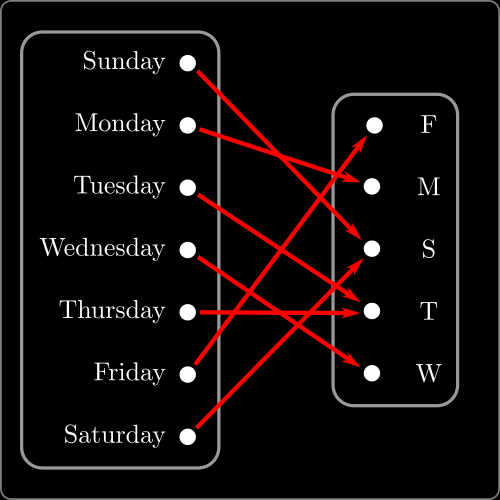

\( \require{cancel}
\newcommand{\ds}{\displaystyle}
\newcommand{\es}{ {\varnothing}}
\newcommand{\st}{ \;:\; }
\newcommand{\pow}[1]{ \mathcal{P}\left(#1\right) }
\newcommand{\set}[1]{ \left\{#1\right\} }
\newcommand{\Mod}[1]{\;(\mathrm{mod}\; #1)}
\newcommand{\rel}{\;R\;}
\newcommand{\nrel}{\;\cancel{R}\;}
\renewcommand{\neg}{\sim}
\renewcommand{\text}[1]{\mathsf{\mbox{#1}}}
\DeclareMathOperator{\gcd}{gcd}
\DeclareMathOperator{\lcm}{lcm}
\newcommand{\lt}{<}
\newcommand{\gt}{>}
\newcommand{\amp}{&}
\definecolor{fillinmathshade}{gray}{0.9}
\newcommand{\fillinmath}[1]{\mathchoice{\colorbox{fillinmathshade}{$\displaystyle \phantom{\,#1\,}$}}{\colorbox{fillinmathshade}{$\textstyle \phantom{\,#1\,}$}}{\colorbox{fillinmathshade}{$\scriptstyle \phantom{\,#1\,}$}}{\colorbox{fillinmathshade}{$\scriptscriptstyle\phantom{\,#1\,}$}}}
\)
PLP - 31
Topic 31—Functions
| Demirbaş & Rechnitzer |
|---|
Escape from formulae
A function is not a formula
We are used to thinking of functions as formulas or (perhaps) algorithms
- Give me an input number \(x\)
- I do some arithmetic on \(x\) or use look-up tables
- I return to you a numerical result \(y\)
Can define functions on other objects (not just numbers):
- Input day of the week (in English)
- Return the first letter
- Any legal input must have an output
- One input value gives only one output value

Function as a look-up table
We can summarise the previous function as
\begin{align*}
\Big\{ (\text{Sunday}, S), (\text{Monday}, M), \amp (\text{Tuesday}, T), (\text{Wednesday}, W),\\
\amp (\text{Thursday}, T), (\text{Friday}, F), (\text{Saturday},S) \Big\}
\end{align*}
More generally a function \(f\)
- takes inputs from set \(A\) and gives outputs in set \(B\)
- can be written as a subset of \(f \subseteq A \times B\) — a type of relation
Not every subset of \(A \times B\) is a function — must be well defined
Every input from \(A\) must have an output in \(B\)
\begin{equation*} \forall a \in A, \exists b \in B \text{ s.t. } (a,b) \in f \end{equation*}Exactly one output for a given input
\begin{equation*} (a,b_1) \in f \land (a,b_2) \in f \implies b_1 = b_2 \end{equation*}
A definition
Definition:
Let \(A,B\) be non-empty sets
A function from \(A\) to \(B\) is a non-empty subset \(f \subseteq A \times B\) so that
- for every \(a \in A\text{,}\) there exists a \(b \in B\) so that \((a,b) \in f\)
- if \((a,b) \in f\) and \((a,c) \in f\) then \(b=c\)
If \((a,b)\in f\) we write \(f(a)=b\) and say that \(b\) is the image of \(a\)
Finally, the range of \(f\) is
\begin{equation*}
\mathrm{rng} f = \set{b \in B \text{ s.t. } \exists a \in A \text{ s.t. } f(a)=b}
\end{equation*}
Note that the range is a subset of the codomain
An example and a non-example
Consider the sets
\begin{align*}
f &= \set{ (x,y) \in \mathbb{Z}\times \mathbb{Z} \st 3x+2y=0}\\
g &= \set{ (x,y) \in \mathbb{Z}\times \mathbb{Z} \st 3x+y=0}.
\end{align*}
The set \(f\) is not a function
- it is not defined on all of its domain \(\mathbb{Z}\)
- when \(x=1\) there is no \(y \in \mathbb{Z}\) so that \(3x+2y=0\)
The set \(g\) is a function
- for every \(x \in \mathbb{Z}\text{,}\) pick \(y= -3x \in \mathbb{Z}\text{,}\) then \((x,y)\in g\)
if \((x,y)\in g\) and \((x,z) \in g\) then
\begin{equation*} 3x+y=0 \qquad \text{ and } \qquad 3x+z=0 \end{equation*}so \(y=z\) as required.